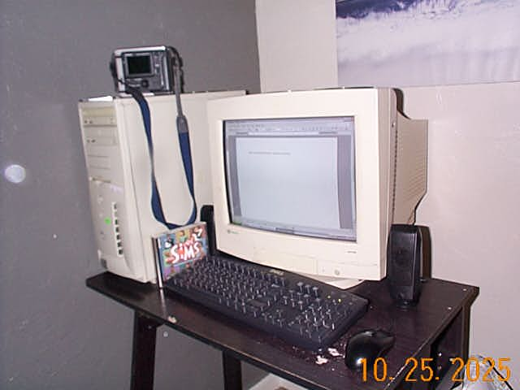

Blog Post 10/25/25
Hi there,
Since my last blog post I have finished the entire Sprawl Trilogy which are the sequels to Neuromancer. I’m pretty bummed out that I‘ve run out of books in that series. I really enjoyed the world Gibson created. Although I think it’s really funny how the aesthetic changes throughout the series. Neuromancer is very obsessed with the aesthetic of technology. Everyone has implants and robotic arms and there are holograms everywhere and space stations and cyberspace. Count Zero is still pretty futuristic but it feels a lot more grounded in its world, most of what you’ll see there is a dense urban setting that seems pretty familiar to the reader, and then there’s Mona Lisa Overdrive. A chunk of Mona Lisa Overdrive is set in London. London is London. It looks like London. It smells like London. There are Londoners living there. It is London. Very cyberpunk
It kind of makes me want to read Neuromancer again honestly, although I think I’ll need to give myself a year or so before I’m ready.
This month I went to the Portland Retro Gaming Expo with my friend and had a ton of fun there. I dragged home a Dell Dimension 4100 from the RE-PC booth which I am currently writing this blog post on! It’s a really cool computer. It’s got a 1GHz Pentium 3, 128mb of ram and a Nvidia Geforce 2. I have it running windows xp which is a little anachronistic as I think most people would choose to put 98se on a machine like this, but I’m very nostalgic for underpowered little xp boxes so that’s what I have here for the time being.
Lately I have been using it to play Chis Sawer’s Locomotion and Dungeon Keeper 2. which are both fantastic videogames. I need to get around to installing unreal tournament 99 and convince my friends to come over and LAN party with me hehe
Now that I have a real retro web browsing machine I’ve discovered that yes my website does not function quite as intended on older browsers. I do intend on improving the site to make it work better but enthusiasm for the website project is very limited right now so hopefully that will happen another day.
I’ve also gotten a new camera! A Kodak DC210 Plus which is my first crappy camera that shoots on flash media instead of floppy disks! Wow!

The pictures it takes are honestly pretty good; like when it's at the highest setting and has good lighting it’s almost too competent to be fun honestly (the above picture is neither of those). Taking pictures with this thing is annoying as there is no digital viewfinder, the screen is only for reviewing pictures and changing settings. To take a picture you have to look through the tiny viewfinder (that my glasses run into) and hope that your finger isn’t in front of the lens
This thing is pre-USB so I think it would be fun to track down its serial cable and software and try to get it set up on the Dell
Anyways talk to ya later. No idea what’s coming up for me next month, probably seasonal depression. Take care assholes <3